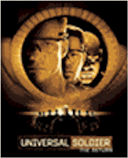
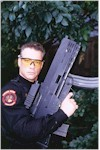
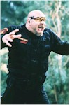

Contents | Features | Reviews | Books | Archives | Store |
 |
|
| Movie Credits | Buy It! |
Universal
Soldier 2:
The Return
Review by
Cynthia Fuchs
Posted 20 August 1999
|  |
Directed by Mic Rodgers Starring Jean-Claude Van Damme, Bill Goldberg, Michael Jai White, Kiana Tom, Heidi Schanz, Karis Paige Bryant, Daniel von Bargen, Xander Berkeley, James Black, Brent Hinkley, Justin Lazard, Scott Roland, and Colin Skelton Written by John Fasano |
It's hard not to expect the worst of Universal Soldier: The Return. It's clear in his late-night talk show interviews that the big story is not Jean-Claude Van Damme's non-career, but rather his much more exciting personal life. To be fair, he has had a hard time of it recently, what with all his relationship hells, publicized addictions, and legal tribulations (for a while last year he was a regular on Court TV). That is, interviewers don't usually ask Jean-Claude Van Damme how he prepares for his parts.
And yet, there was a time when
the Muscles From Brussels had something resembling a future in pictures, one
which he proclaimed loudly and often. Given his immediate predecessors -- those
much adored and well-paid no-necks Mr. T., Schwarzenegger, and Sly Stallone --
Van Damme's ambitions were hardly out of line. Sure, he was loud and cocky, but
they all were then, those proto-WCW action stars, competing at the box office
and calling each other out in public (not to mention Arnold and Sly's fighting
over Brigitte Nielsen). All those pumped-up guys swaggered and posed. It's what
they were paid to do.
Van
Damme knew he was lucky to be paid for such silliness. But he had something
else, namely those spectacular splits. Or rather, he had what those splits
represented, grace and athleticism, a precision and beauty that the other he-men
superstars couldn't imagine or avoided on purpose. This made Van Damme slightly
different from them (for a minute Steven Seagal had another approach -- you
might have called it intelligence -- but he lost it almost immediately after the
frankly extraordinary Above the Law, which had a cogent political agenda and
a very cool Pam Grier, long before Quentin Tarantino was credited with reviving
her career).
Van Damme's martial arts were
pretty and sustained, plus he had a real-life well-toned body that made him look
sexy to straight and gay fans (what's more, he publicly appreciated his gay
fans, not exactly something the other muscleheads would do, even if they had
gay fans). Over the past decade, Van Damme's films have ranged from silly with
almost-smart moments (Hard Target, Timecop, and Double Team
[almost-smart moment: when the Coke machine that saved him and world partner
Dennis Rodman from a nuclearesque wall-of-fire]) or just silly (The Quest,
which he wrote and directed, or Sudden Death, set in a hockey rink). In
last year's simply awful Knock Off, inexplicably directed by the
brilliant Tsui Hark and reportedly Van Damme's first drug-free performance in
years, it was obvious that the star was dead to Hollywood.
And so here he comes again,
resurrected one more time, in a movie where he plays a dead and resurrected
marine, Private Luc Devereaux. In 1992's Universal Soldier, directed by
Roland (ID4) Emmerich, Luc is killed in Vietnam, then put back together
by some speed-up-your-bodily-systems technology that makes the Unisols virtually
unkillable. In the States, these murder-machines are kept on ice (because their
bodies run so hot) until they are deployed for fierce anti-terrorist activities.
Originally a poor farm boy from the Bayou (hence his unkillable French accent),
Luc has a rudimentary conscience as well as a reporter-sidekick (Ally Walker,
trying out her Profiler tics and sighs), which make him the mortal enemy
of the most diehard of the Unisols (Dolph Lundgren, in a sincerely great
performance).
If the villains in the first film
are the profit-minded Unisol manufacturers, in The Return, Directed by
former Mel Gibson stunt double Mic Rodgers, the bad guys are the machines
themselves. Specifically, the central computer, named Seth, overhears that the
post-cold-war government is "pulling the plug" on the project, so he
decides to protect himself and his minions (which include a humungoloid named
Romeo, played by bigbaldmean wrestler Bill Goldberg). You've seen this
technophobic plot before: Hal meets the Terminator meets the Lawnmower Man in
Seth, who inserts himself into a human body for better mobility (played by the
martial arts whiz kid Michael Jai White, who can't seem to catch a break after
the deeply flawed Spawn and the absolutely grotesque Ringmaster).
As
per the formula, Luc has to fight Romeo like a wrestler and Seth like a
kickboxer. In between, however, he has to fight an unbelievably ill-conceived
plot. Written by William Malone and John Fasano, the new movie takes up where
the first one left off. Sort of. The premise is that Luc is human again, by way
of a some ridiculous and unexplainable reverse technology. The problem is that
he's working on this project to which he is morally -- and very personally --
opposed, making dead men (and in 1999, women too) into machines. In other words,
Luc's existence in this universe, helping a numb nuts scientist (Xander
Berkeley) and the most passive and dull-witted general in history (Daniel Van
Bargen) never makes a stitch of sense.
Given this major plot hole, the
film motivates Luc's interest in Seth's egomaniacal takeover by giving him
several damsels to fret about. These include his soldier-partner Maggie (Kiana
Tom), his 11-12-ish daughter, Hillary (Karis Paige Bryant), and the memory of
his dead blond wife (visible only in wedding photos, she's not Ally Walker but
maybe she's supposed to pass, who can say?). He also picks up another sidekick
female reporter, Erin (Heidi Schanz), this time with brown hair. She's mostly
annoying, particularly to the audience with whom I saw the film: they hooted at
her every appearance on screen and rooted for Seth's lunkheads to blow her up.
Van Damme has a hard row in this
film: the direction is crude (cuts during supposed action scenes include
everyone's individual reaction shots, making the pace like molasses), the score
is dumbfounding (speed metal by GWAR, Megadeath, and Anthrax for heavy artillery
shootouts, thunk thunk minor piano keys for suspense, orchestral pile-ups for
the one-on-ones between Luc and whoever), and the digital FX are unimpressive.
The star runs through his gamut: he smiles tenderly at Hillary, shows his pain
over a couple of deaths, lectures Erin, head-butts Romeo, even makes the nuclear
family unit look more or less whole in the inevitable closing embrace. But let's
hope, for his sake, that his own return is not riding on this one.
Contents | Features | Reviews
| Books | Archives | Store
Copyright © 1999 by Nitrate Productions, Inc. All
Rights Reserved.